Joseph J. Lim (임재환)
Postdoctoral ScholarStanford University
Office: 353 Serra Mall, Gates Building, Stanford, CA, 94305
E-mail: lim@csail.mit.edu
CV / Github / Google Scholar
About me
I am a postdoctoral scholar at Stanford University. I work at Stanford Artificial Intelligence Laboratory with the Computer Vision group led by Professor Fei-Fei Li.Previously, I completed my PhD at the Massachusetts Institute of Technology under the guidance of Professor Antonio Torralba, and also had a half-year long postdoc under Professor William Freeman. I received my bachelor degree at University of California - Berkeley, where I worked in the Computer Vision lab under the guidance of Professor Jitendra Malik. I also have spent time at Microsoft Research, Adobe Creative Technologies Lab, and Google.
News
- (April 2016) I will be joining the University of Southern California (USC) as an assistant professor on January 1st, 2017.
- (August 2015) 1st Workshop on Object Understanding for Interaction in conjunction with ICCV 2015.
Publications
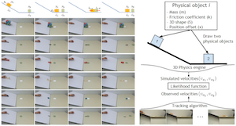
Galileo: Perceiving Physical Object Properties by Integrating a Physics Engine with Deep Learning
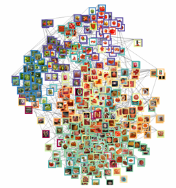
Discovering States and Transformations in Image Collections
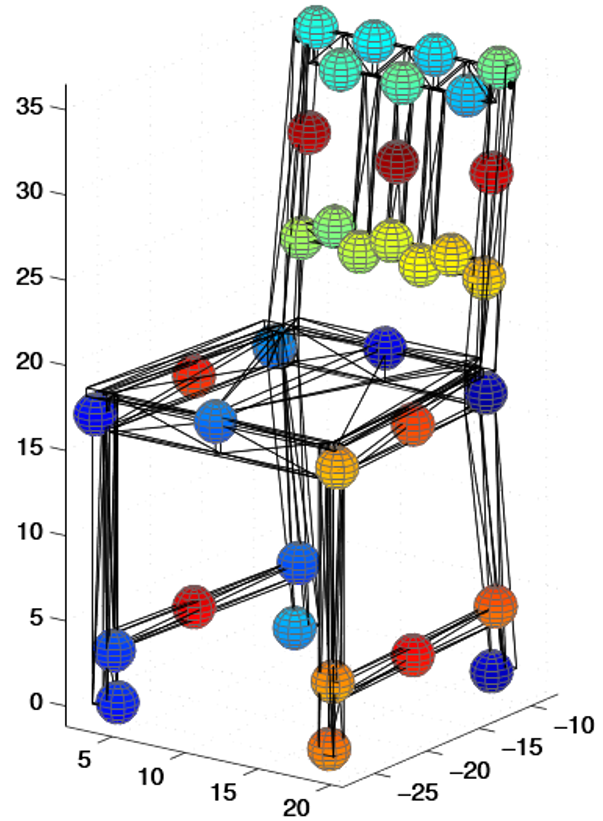
FPM: Fine pose Parts-based Model with 3D CAD models
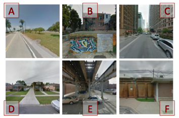
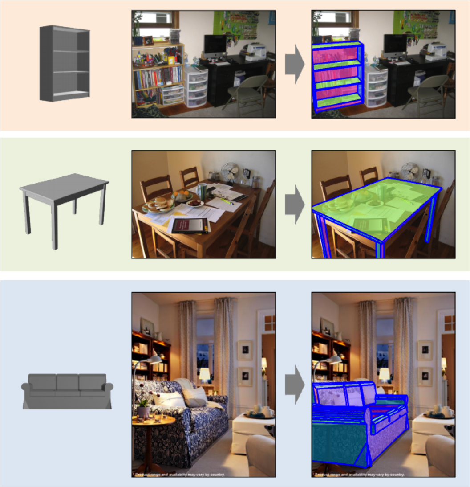
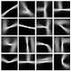
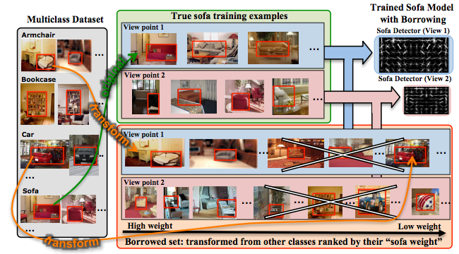
Transfer Learning by Borrowing Examples for Multiclass Object Detection
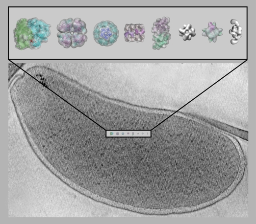
Experimental Evaluation of Support Vector Machine-based and Correlation-based Approaches to Automatic Particle Selection
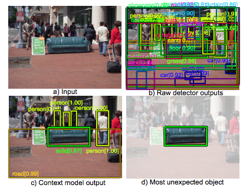
Exploiting Hierarchical Context on a Large Database of Object Categories
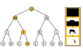
Context by Region Ancestry
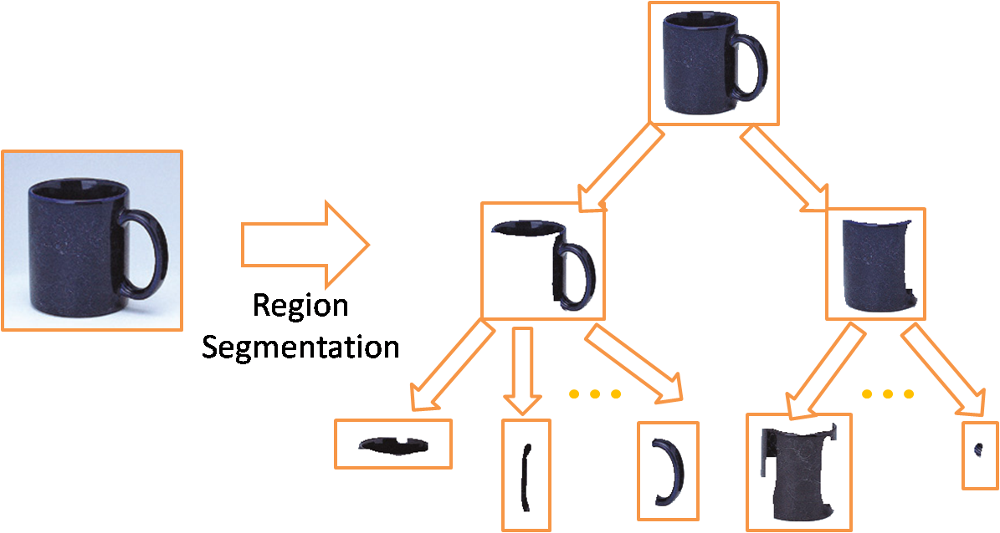
Recognition using Regions
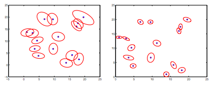
A Distributed Message Passing Algorithm for Sensor Localization
Others
- Course Instructor (Winter 2014). 6.S093 Visual Recognition through Machine Learning Competition
-
Teaching Assistant (Spring 2010). 6.869: Advances in Computer Vision
- NSF Graduate Research Fellowship (2009-2014)
- Organization: Workshop on Object Understanding for Interaction (ICCV 2015), CMT Assistant (CVPR 2015)
- Reviewer: ICCV (2011-2015), ECCV (2012-2014), CVPR (2011-2015), ACCV (2012,2014), IJCV, TPAMI
- Program Committee: SUN workshop - CVPR (2013), Story Telling workshop - ECCV (2014), 3D from a single image workshop - CVPR (2015)